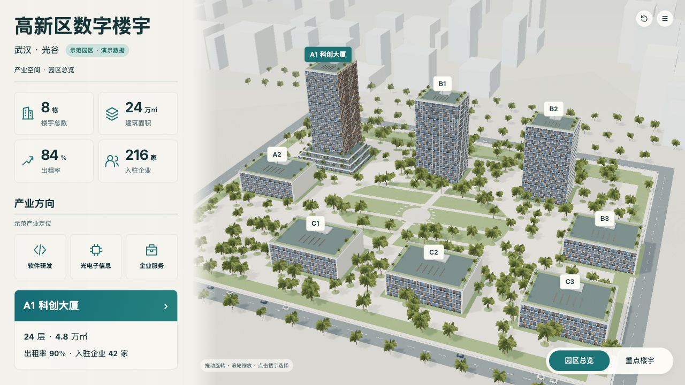
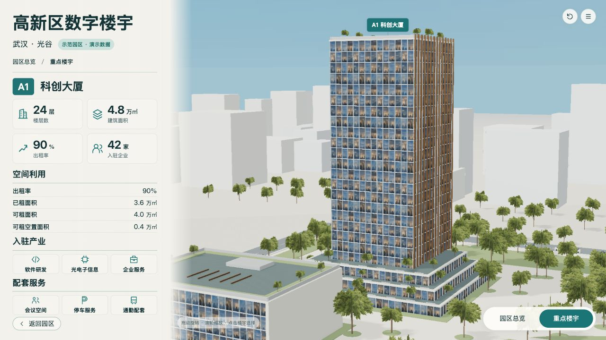

确认的两层B图保留原比例，不裁切、不修改。实际WebGL演示快照，A1选中、巡览关闭、该版固定相机。最终目标画布性能另见1920×1080有效实测记录；不将AI图当作测绘数据。
两图保留原始比例，AI图不具备测绘精度；对照不把AI不可数细节当作工程数据。浏览器截图是实际WebGL画面。



| ID | 预期 | 实际 | 原因假设 | 源修改 | 重建/复验证据 | 结果 | 后续 |
|---|---|---|---|---|---|---|---|
| V-08 | 园区后排三塔与前排五栋构图清晰，两层同一A1 | 八栋可见，A1三级退台裙房、21层塔楼，共24层；近景同一GLB | 初版坐标与相机偏移 | v9调整唯一规划坐标和相机；当前保持 | production-spec-v11-landscape.md；assets-contract-v11.json；两层实际截图 | 主要位置与结构问题已修复 | 保持现有业务和模型身份 |
| V-05 | 蓝灰玻璃、青铜竖向构件、窗内层次 | 固定窗图集与真实竖向几何；近景仍有重复和静态反射 | 实时材质与固定图集的表现范围 | 可重建的幕墙贴图输入及几何生成脚本 | design/material-generation-v1.json；building-detailed-v11-final.jpg | 主要材料特征具备；静态反射与重复作为表现限制保留 | 不宣称照片级或像素级匹配 |
| V-06 | 自然叶簇代替粗球树冠 | v10使用透明叶片卡，v11放大叶簇并补中央树；保留远景白模与简化道路家具 | 粗球树冠影响真实感；初版叶簇过稀 | 固定透明叶簇输入、12片交叉卡、尺寸比例和中央6株；分层排除AO矩形投影 | design/foliage-generation-v1.json；foliage-orbit-v11.jpg；v10/v11截图 | 粗球树冠问题已修复；远景细节仍简化 | 交付记录中保留实时景观限制 |
| V-03 | 天空及叶簇无错误AO色块 | 天空使用背景纹理，透明植被不进入AO法线通道；保留正常阴影 | 天空几何和透明卡片进入GBuffer | SceneView.js背景与GTAO渲染层控制 | 两层v11-final截图；foliage-orbit-v11.jpg | 已修复已见伪影 | 后续改材质时按相同相机复核 |
| U-02/P-03 | 底部安全区、缺失数据态、切换稳定 | 底部28.203125px；实际1920×1080同实例12轮切换，104几何/17纹理稳定，末次P95 32.4ms | 初期底部拥挤、重复阴影更新及后台视口未生效 | 布局安全区、静态阴影一次更新、同实例实际尺寸重新采证 | runtime-verification-v11-verified.json；layout-1920-v11-verified.json；viewport-diagnosis-v11.json | 当前环境检查通过；不外推展厅硬件和长时性能 | 部署目标环境后再测硬件与长时运行 |
[
{
"level": "campus",
"baseline": "design/concepts/B-campus-v2.png",
"baselineSha256": "b7256276a9357e0255ac1799e189de000f3c69563e0672624b826acfb76db264",
"actual": "checks/campus-detailed-v11.jpg",
"actualSha256": "0207824e615e63561e536b29480fa5bd68b5cbd13ce0e1fc75a19a87310466c0"
},
{
"level": "building",
"baseline": "design/concepts/B-building-v2r1.png",
"baselineSha256": "1aa5b6d94d1b17ae9b7eb815fa59fa75c1f0f44f88a9f2e41045d85aae8f43e4",
"actual": "checks/building-detailed-v11.jpg",
"actualSha256": "c0407fc6a250ad687712f74dbc61fa5cf9d413db5e1c03d4bf70fc2205b802ae"
}
]